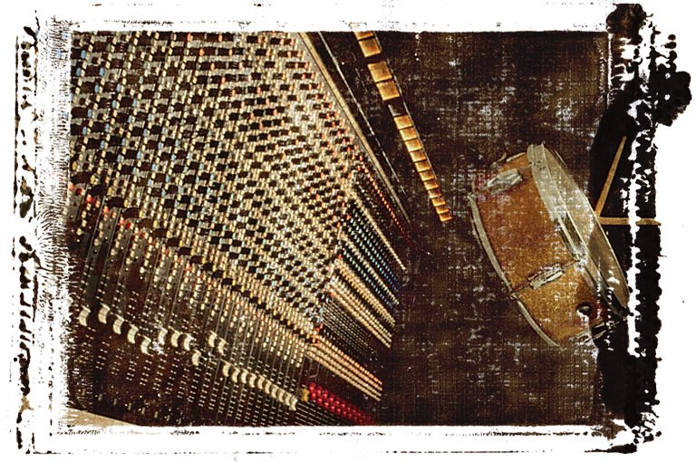

|
Luke Hornof
My LinkedIn page.
My resume.
I spent 10 years doing Computer Science research and 10 years working in Silicon Valley / San Francisco startups. My research included run-time code generation and static analyses. The startups developed cutting edge technologies in microprocessor design, scalable video streaming, and Internet advertising. My current interests include social networking and mobile apps.

Publications
Accurate binding-time analysis for imperative languages: Flow, context, and return sensitivity. L. Hornof and J. Noye. Journal of Theoretical Computer Science, November 2000, vol 248, no 1/2.
Self-specializing mobile code for adaptive network services. L. Hornof. International Working Conference on Active Networks, Lecture Notes in Computer Science 1942, Springer-Verlag, Tokyo, October 2000.
Certifying compilation and run-time code generation. L. Hornof and T. Jim. Journal of Higher-Order and Symbolic Computation, December 1999, vol 12, no 4.
Certifying compilation and run-time code generation. L. Hornof and T. Jim. ACM SIGPLAN Conference on Partial Evaluation and Semantics-Based Program Manipulation, San Antonio, Texas, January 1999.
A study of large object spaces. M. Hicks, L. Hornof, J. Moore, and S. Nettles. International Symposium on Memory Management, Vancouver B.C., October 1998.
Partial evaluation for software engineering. C. Consel, L. Hornof, J. Lawall, R. Marlet, G. Muller, J. Noye, S. Thibault, N. Volanschi. ACM Computing Surveys, Symposium on Partial Evaluation, September 1998, vol 30, no 3.
Tempo: Specializing systems applications and beyond. C. Consel, L. Hornof, J. Lawall, R. Marlet, G. Muller, F. Noel, J. Noye, S. Thibault, N. Volanschi. ACM Computing Surveys, Symposium on Partial Evaluation, September 1998, vol 30, no 3.
Automatic, template-based run-time specialization: Implementation and experimental study. F. Noel, L. Hornof, C. Consel, and J. Lawall. International Conference on Computer Languages, Chicago, May 1998.
Effective specialization of realistic programs via use sensitivity. L. Hornof, J. Noye, and C. Consel. International Static Analysis Symposium, Lecture Notes in Computer Science 1302, Springer-Verlag, Paris, France, September 1997.
Static Analyses for the Effective Specialization of Realistic Programs. L. Hornof. Ph.D. thesis, University of Rennes, France, June 1997.
Accurate binding-time analysis for imperative languages: Flow, context, and return sensitivity. L. Hornof and J. Noye. ACM SIGPLAN Conference on Partial Evaluation and Semantics-Based Program Manipulation, Amsterdam, The Netherlands, June 1997.
A uniform automatic approach to copy elimination in system extensions via program specialization. E.N. Volanschi, G. Muller, C. Consel, L. Hornof, J. Noye, and C. Pu. Research Report 2903. Inria, June 1996.
A uniform approach for compile-time and run-time specialization. C. Consel, L. Hornof, J. Noye, F. Noel, and E.N. Volanschi. Partial Evaluation International Workshop, Lecture Notes in Computer Science 1110, Springer-Verlag, Dagstuhl Castle, Germany, February 1996.
Compiling Prolog to Standard ML: Some optimizations. L. Hornof. Senior Honors Thesis, Carnegie Mellon Technical Report CMU-CS-92-166, September 1992.